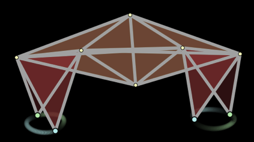

يمكن إستخدام أساليب الرياضيات من أجل محاكاة العمليات الميكانيكية أو الجسدية. تم بناء هذا الروبوت المتنقل في المحاكاة على اليمين من جزئيات خفيفة تم جمعها بواسطة زنبركات صلبة. يتغير طول الزنبرك المستعمل في الساق بشكل دوري. وهذا ما يخلق حركة المشي.
لكل إطار، تستخدم المحاكاة مواقع وسرعات جميع النقاط لحسب القوى المؤثرة على الكتلات. وتُستخدم القوى بدورها لحسب المواقع والسرعات في الإطار التالي. وهكذا تنشأ حركة سلسة.
|
 |
حركة الساقين